Grid Guide Tool
A grid-based layout assistant for UI design in Unity. Provides visual grid overlays, snapping functionality, and flexible grid modes to help align and organize UI elements with precision.
🔎 Overview
The UI Furnace – Grid Guide Tool is a grid-based layout assistant for UI design in Unity. It provides visual grid overlays, snapping functionality, and flexible grid modes to help align and organize UI elements with precision.
Part of the UI Furnace framework, it is designed to streamline UI workflows and improve layout consistency.
⚡ Quick Start
Follow these steps to quickly set up and start using the UI Furnace – Grid Guide Tool in Unity.
1. Set-Up the Grid Guide
After importing the package:
Go to: Tools → UI Furnace → Grid Manager
This will open the Grid Manager window.
Enable Grid Visibility:
In the Grid Manager window, enable: Show Grid
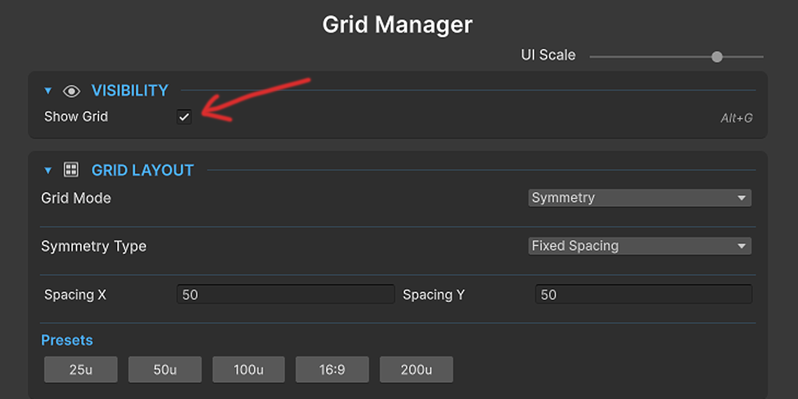
2. Configure the Grid
In the Grid Layout section, select your desired Grid Mode:
🔹 Symmetry Mode
Adjust Spacing (X and Y axes) and Row / Column count. Use presets for quick setup.
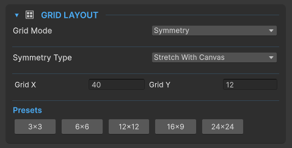
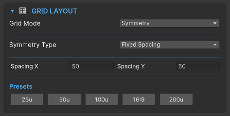
🔹 Dynamic Mode
Enable Grid Edit Mode to customize lines manually. Right click on your canvas or turn on the Add lines mode to add/delete lines. Grid lines also supports Snap to element.
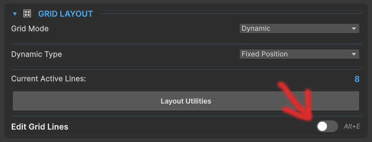
Use Layout Utilities (Dynamic Mode)
Inside Grid Layout → Layout Utilities: Clear all lines or Automatically
place lines.
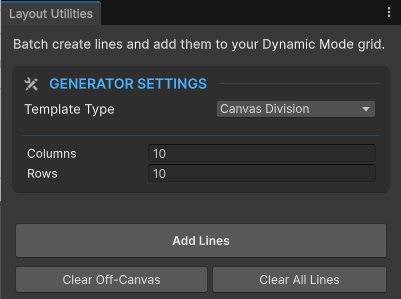
3. Enable Snapping
In the Universal Snapping section:
Enable snapping and set your desired Snap Distance.
👉 UI elements will now snap to grid lines automatically when you drag them.
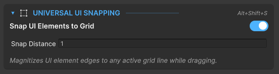
4. Customize Grid Appearance
Grid Colors: Adjust main axis color, grid line color, and opacity.
Line Thickness: Set thickness for axis lines and grid lines.
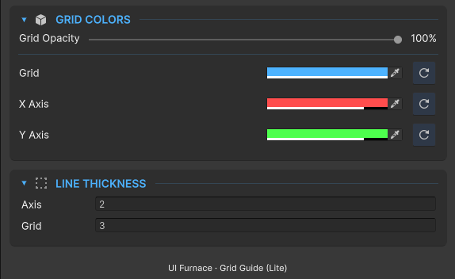
📦 Installation
1. Requirements
- Unity Version: Unity 2021.3 (LTS) or newer. (Tested heavily up to Unity 6).
- Dependencies: None. This tool runs entirely on built-in Unity Editor features.
2. Importing the Asset
- Open your Unity project and navigate to Window > Package Manager.
- Select My Assets from the top-left dropdown.
- Search for UI Furnace Grid Guide (Lite), click Download, and then click Import.
- In the Unity import window that pops up, hit Import again to bring all files into your project.
3. Initial Setup
To activate the tool and begin using it, you just need to open the main window:
Go to the top menu bar and select: Tools > UI Furnace > Grid Manager
Recommended: Dock this new window somewhere convenient, like next to your Inspector or Hierarchy.
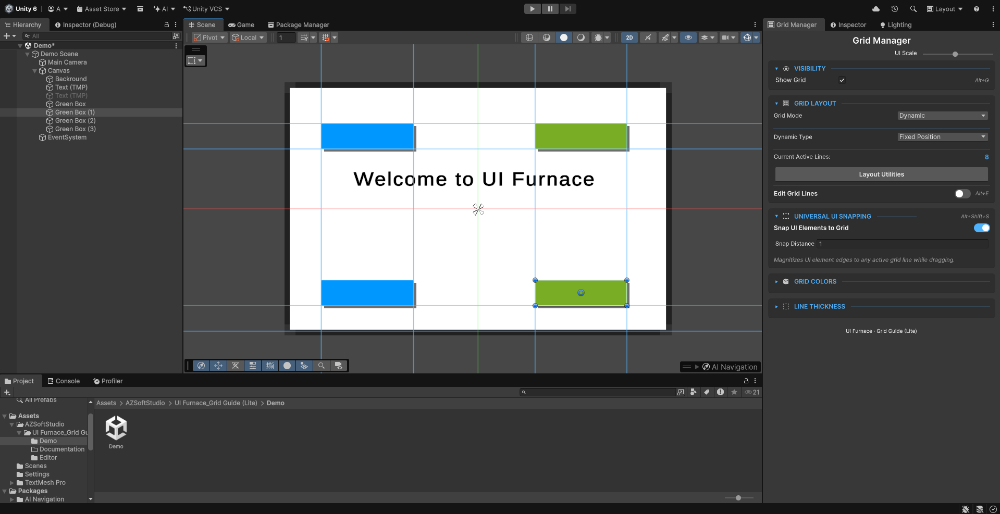
🎯 Grid Modes Selection
In the Grid Layout section, select your desired Grid Mode.
| Feature / Aspect | Symmetry Mode | Dynamic Mode |
|---|---|---|
| Concept | Auto-generates an even grid | Freely place and customize lines |
| Editing | Locked (no manual changes) | Fully interactive (add, move, delete) |
| Workflow | Fast and automatic | Slower but highly precise |
| Best For | Uniform layouts, grids, spacing | Custom UI, complex layouts, fine control |
📐 Layout Behavior
Below the Grid Mode option, choose the Grid Behavior to control what happens when the screen resizes.
| Layout Behavior | The Gist | When Screen Resizes... |
|---|---|---|
| Fixed Spacing | Lines locked to exact pixel positions | Lines stay exactly in place |
| Stretch with Canvas | Lines use percentage-based positions | Grid stretches/squashes to fit screen |
🛠 Core Features & Usage
1. Symmetry Mode (Mathematical Generation)
What it does: Instantly generates a perfectly even, infinite grid across your canvas.
How to use it: Choose Fixed Spacing for absolute pixel distances (e.g., a line every 50px), or choose Stretch to divide your canvas into flexible rows/columns (e.g., 16 columns by 9 rows) that auto-scale continuously with your screen resolution. Click the built-in Presets for instant 16:9 or 3x3 grids!
2. Dynamic Mode (Custom Wireframing)
What it does: Unlocks your grid so you can manually place, drag, and design custom guide lines precisely where you need them. You can decide if your custom lines are pinned at exact pixels, or if they act as percentages that stretch with the screen.
How to Add & Edit Lines: Enable Edit Mode (Alt+E), then:
- Right-Click Menu: Right-click the Scene View (or press Alt+H / Alt+V). A glowing new line will attach to your cursor. Simply move your mouse to the desired position and Left-Click to drop it.
- Axis Dragging: Toggle [Grid] Add Lines On. Hover your mouse over the bright center horizontal or vertical axis in your scene, and click and drag outward to pull a brand new line directly out of the center.
- Deleting: Click a line to select it (or Ctrl/Cmd + Click for multi-select) and press Alt+Backspace to wipe them clean.
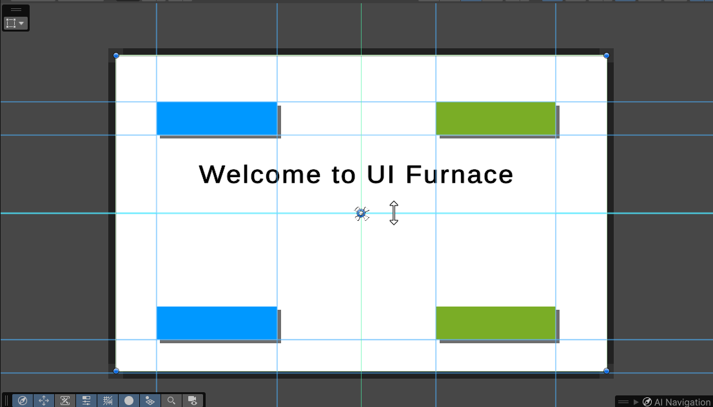
3. Bi-Directional Magnetic Snapping
What it does: Completely eliminates layout guesswork by featuring intelligent, two-way magnetic snapping between your grid and your UI elements.
How to use it:
- Snap Guide Lines to UI (Alt+S): When you are manually moving or drawing a new Grid Line, that line will magically detect your UI and snap flush against the edges and centers of your existing UI elements.
- Snap UI to Grid (Alt+Shift+S): When holding Unity's Rect Tool (T), dragging a UI Element will cause it to aggressively magnetize perfectly to your custom grid lines!
4. Visual Feedback
What it does: Provides instant, satisfying visual cues directly over your Canvas without cluttering your hierarchy.
How it works: When a UI element successfully snaps into place, the tool draws beautiful, neon L-brackets and a crosshair perfectly wrapping your element to confirm the lock. Additionally, grid lines actively react to your mouse, intelligently shifting to high-contrast hover and drag colors when you grab them.
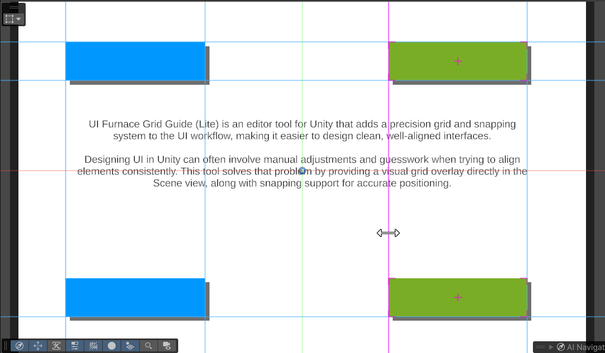
5. Fluid Conversion (Fixed vs. Stretch)
The Feature: Dynamic mode isn't just about placing custom lines—it's a mathematical engine for controlling how those lines react natively to multiple screen resolutions.
The Workflow: If you built a complex layout using absolute pixel coordinates (Fixed) and suddenly need your game to support Ultrawide screens, you do not need to start over! Simply toggle the Dynamic dropdown from Fixed to Stretch. A dialog will confirm the conversion, instantly recalculating all your exact pixel bounds into fluid percentages relative to the Canvas size, making your entire custom grid fully responsive.
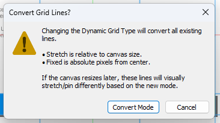
⌨️ Shortcuts
Master these hotkeys to drastically speed up your UI layout process.
| Shortcut Action | Key Combination | Context / Condition |
|---|---|---|
| Toggle Grid Visibility | Alt + G | Global (Scene View) |
| Toggle Edit Mode | Alt + E | When in Dynamic Mode |
| Toggle Snap to Elements | Alt + S | When Edit Mode is active |
| Toggle Universal Snapping | Alt + Shift + S | Global (applies to standard UI design) |
| Add Horizontal Line | Alt + H | When Edit Mode is active |
| Add Vertical Line | Alt + V | When Edit Mode is active |
| Delete Selected Line(s) | Alt + Backspace | When Edit Mode is active |
🚧 Current Limitations & Known Behaviors
1. Resizing vs. Translating (Moving) UI Elements
The Limitation: Magnetic snapping works flawlessly when you are
moving a UI element across the screen. However, if you grab the corner
handles of the Rect Tool to physically resize/scale the element, the
resizing action will not snap to the grid lines.
Why: The snapping engine calculates center-mass displacement to move objects
safely. Forcibly altering an object's sizeDelta during a live drag proved
too destructive to complex UI hierarchies, so snapping is currently restricted to
translation (moving) only.
2. World Space Canvases Are Unsupported
The Limitation: The Grid Guide will explicitly refuse to render on any Canvas set to
World Space.
Why: World Space canvases exist in local 3D scene geometry which requires entirely
different matrix calculations and depth-sorting. We deliberately restricted the tool to Screen
Space (Overlay) and Screen Space (Camera) to ensure editor performance remains lightweight,
fast, and mathematically perfect for where 95% of UI is actively built.
3. Extreme Grid Densities (Performance)
The Limitation: If you enter Symmetry Mode (Fixed Spacing) and set your pixel spacing to
an incredibly low number (e.g., 1 unit) on a massive 4K canvas, your Unity Editor will
experience heavy frame drops.
Why: The Grid uses native UnityEditor.Handles to guarantee high-fidelity,
anti-aliased lines. Forcing the Editor GUI to loop and render 4,000+ individual lines
simultaneously will brute-force the editor rendering limits. Keep your grid spacing above 10
whenever possible!
4. Single-Canvas Support
The Limitation: You can only save up-to 1 canvas data.
Why: To support multiple canvas, we would need a saving system. Its mildly complex and
I have planned to add this in the pro version.
💡 FAQ & Troubleshooting Guide
- 1. Why the grid isn't showing up in my Scene View!
The Cause: You either haven't selected a UI element, the Grid is toggled off, or you are using an unsupported Canvas type.
The Fix: Make sure you actually click on a UI element in your Hierarchy. Ensure your Canvas Render Mode is set to Screen Space - Overlay or Screen Space - Camera. Press Alt+G to ensure grid visibility is toggled On. - 2. My UI elements aren't snapping to the grid lines.
The Cause: You are using the wrong Unity transform tool, or snapping is disabled.
The Fix: The magnetic snapping engine only runs when you are actively using Unity's Rect Tool (Shortcut: T). Make sure the Rect Tool is selected, and double-check that "Snap UI Elements to Grid" is enabled (Alt+Shift+S). - 3. I can't click, drag, or delete any of the grid lines!
The Cause: You are likely in Symmetry Mode, or Edit Mode is turned off.
The Fix: Symmetry Mode mathematically generates a locked, perfect grid that cannot be manually edited. To freely drag or delete lines, switch to Dynamic Mode and ensure Edit Mode is toggled ON (Alt+E). - 4. What happens when I switch my Dynamic Grid from "Fixed Position" to
"Stretch"?
The Cause: People worry they will lose their custom layout if they change modes mid-project.
The Answer: Your grid is safe! The asset has a built-in conversion protocol. If you built a "Fixed Position" grid (exact pixel coordinates) and switch to "Stretch" (fluid percentages), an alert will pop up asking to convert your lines. It will perfectly recalculate your exact pixel locations into perfect percentages of your current canvas resolution. - 5. I right-clicked the Scene View, but the Grid Menu didn't pop up!
The Cause: Unity's default right-click menu is overriding the tool.
The Fix: The custom right-click grid menu (with Add Line and Delete Line options) only hijacks the right-click button when you are actively inside Dynamic Mode with Edit Mode toggled ON. - 6. The "Add Line" shortcuts (Alt+H / Alt+V) aren't doing anything.
The Cause: You must be actively in Edit mode for the line-drawing shortcuts to listen for your input.
The Fix: Switch to Dynamic Mode and press Alt+E to enter Edit Mode. Once active, the Alt+H and Alt+V shortcuts will spawn line previews perfectly. - 7. My UI elements are jittering or jumping weirdly when I try to snap
them.
The Cause: Your "Element Snap Distance" tolerance is set too high in the settings.
The Fix: Open the Grid Manager window and expand the "Universal UI Snapping" card. Lower the Snap Distance back to 1. Values higher than 1 can cause elements to jump aggressively between nearby lines and create visual artifacts. - 8. The Alt + [Key] shortcuts are conflicting with another asset I own.
The Cause: Shortcut overlap between popular Unity assets is common.
The Fix: All UI Furnace shortcuts are natively integrated into Unity! Simply go toEdit > Shortcuts...at the top of Unity, search for"UI Furnace", and you can rebind every single shortcut to whatever keys you prefer. - 9. Can I snap multiple UI elements at the exact same time?
The Answer: Yes! The engine iterates through your active selection pool. You can highlight 5 different UI elements with the Rect Tool, drag them together, and all 5 will individually detect the grid lines and snap their respective borders perfectly into place.
If the issue persists, please contact support or refer to the latest documentation.
❤️ Credits & Support
AZSoftStudio
Creators of the UI Furnace framework.
For support, updates, and additional tools, please refer to the official documentation or contact our team directly:
Website: www.azsoftstudio.workers.dev